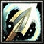

廣受同情的悲劇女性，是明智光秀之女，細川忠興之 妻。光秀滅亡後，她背負著叛賊之女的名聲悲慘地活了下來，皈依基督教，教名為格拉西亞，後來在石田三成囚禁諸將家眷為人質時，主動求死，讓家臣取了自己性 命。 敏捷型遠戰英雄
法術 ：Ｃ 輔 助 ：Ｃ 最擅長一對一人 力量：20+1.60 敏捷：30+2.90（主要） 智 慧：29+2.40 對著目標射 出三支箭矢，每支箭矢可以造成[50/100/150/200]傷害並且擊暈對手[1.5]秒。 消 耗法力[100/140/180/240]，等待時間20秒 Ｅ[主動] 烈焰箭 攻擊時增加[100/200/300/400]點火焰傷害。 消 耗法力[10/20/30/40] 施展時法球、一擊斬、狂怒擊、吸血無效 
Ｒ[被動] 精準之光 增加[8/16/24/32]%攻擊力。 震暈對手2.5秒，同時射出10發致命的箭矢攻擊目標，若是指定的目標死亡， 所有箭矢將隨機找尋附近敵人進行攻擊，每隻箭矢都擁有[40/65/100]點混沌攻擊力，持續12秒。 消耗法力[250/300]，等待時間140秒 |